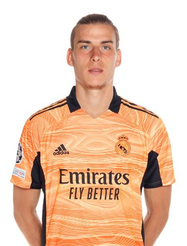
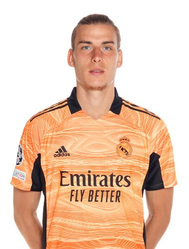
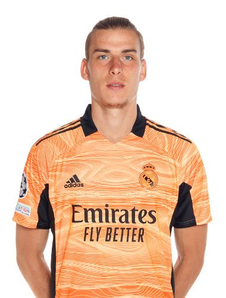

A Real Madrid hálóőrei
Név
Nemzetiség
Születési idő
Mezszám
Piaci érték
Korábbi csapat
Thibaut Courois
Belga
1992. május 11.
1
60 millió euró
Chelsea
Andriy Lunin
Ukrán
1999. február 11.
13
3 millió euró
Zorya Lugansk

 
